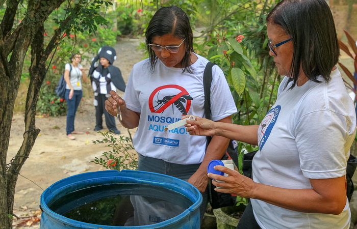

Pequenos cuidados podem contribuir para a prevenção do mosquito em sua casa.

Pequenas ações podem ser poderosas na proteção contra a dengue dentro de sua casa, ajudando a evitar que sua família seja afetada por essa doença. Ao adotar medidas simples em sua rotina diária, você pode fazer a diferença para toda a comunidade.
Uma das principais maneiras de prevenir a dengue é reduzir a reprodução do mosquito Aedes aegypti, o vetor responsável pela transmissão do vírus. Eliminar os locais de reprodução é fácil e pode ser feito rapidamente através de ações cotidianas.
É essencial evitar o acúmulo de água em pneus, latas e garrafas vazias, além de cuidar das plantas, vasos, recipientes e outros objetos que possam acumular água. Manter a limpeza regular da caixa d'água e garantir que ela esteja sempre fechada, com uma tampa adequada, também é crucial. A atenção à limpeza da sua residência, quintal e terreno pode fazer toda a diferença no combate à doença.
Outra medida importante é verificar as calhas regularmente, removendo folhas, galhos e qualquer obstáculo que possa impedir o fluxo da água. Descartar o lixo em sacos plásticos e manter a lixeira fechada, além de remover entulhos do quintal, são práticas fundamentais. Lembre-se também de trocar a água do recipiente de seu animal de estimação com frequência.
Ações simples, como eliminar copos plásticos, tampas de refrigerante e sacolas abertas que possam acumular água, contribuem significativamente para o combate à dengue. Piscinas sem uso devem ser cobertas para evitar a proliferação de mosquitos. Tampar os ralos é outra medida recomendada.
Durante obras em casa, é importante ficar atento para que equipamentos como lonas, carrinhos de mão e betoneiras não acumulem água. A limpeza da bandeja externa da geladeira e da bandeja coletora de água do ar-condicionado também são importantes.
Outras Medidas:
Além das precauções domiciliares, o uso de repelentes é recomendado para proteção individual, pois podem ajudar a evitar as picadas de mosquitos. Verifique a composição do produto para saber a duração da proteção e a necessidade de reaplicação. Se aplicar outros produtos, como protetor solar ou hidratante, use o repelente por último. Para crianças, certifique-se de utilizar produtos adequados para uso pediátrico.
Quanto aos inseticidas em spray ou de tomada, eles podem ajudar a eliminar os mosquitos adultos, principalmente em ambientes fechados, mas sua eficácia é limitada. O uso de mosquiteiros e telas nas janelas dos quartos também pode ser útil para impedir a entrada de mosquitos.
Essas medidas simples podem fazer uma grande diferença na prevenção da dengue e na proteção de sua família e comunidade.
Por: Maurilio Jefte Marinho da Silva